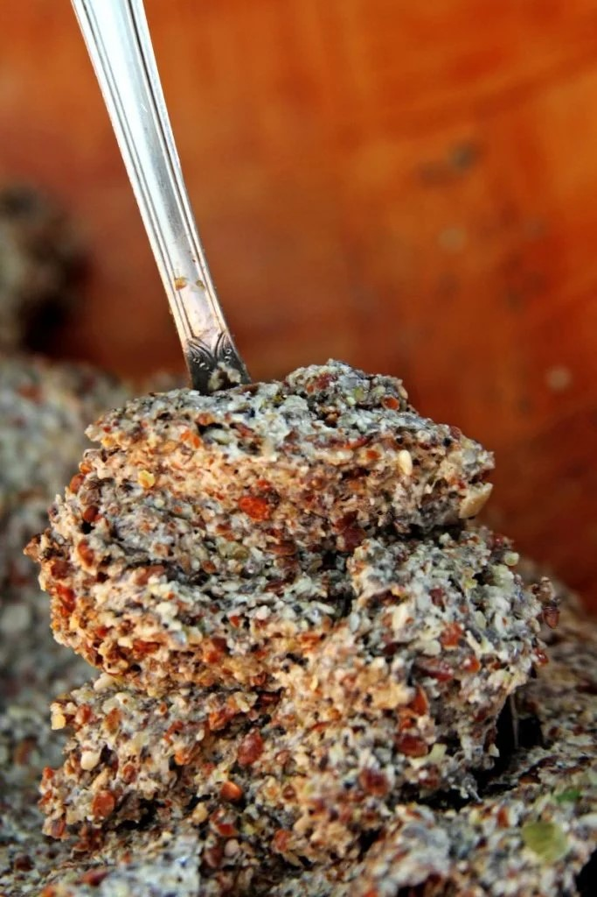
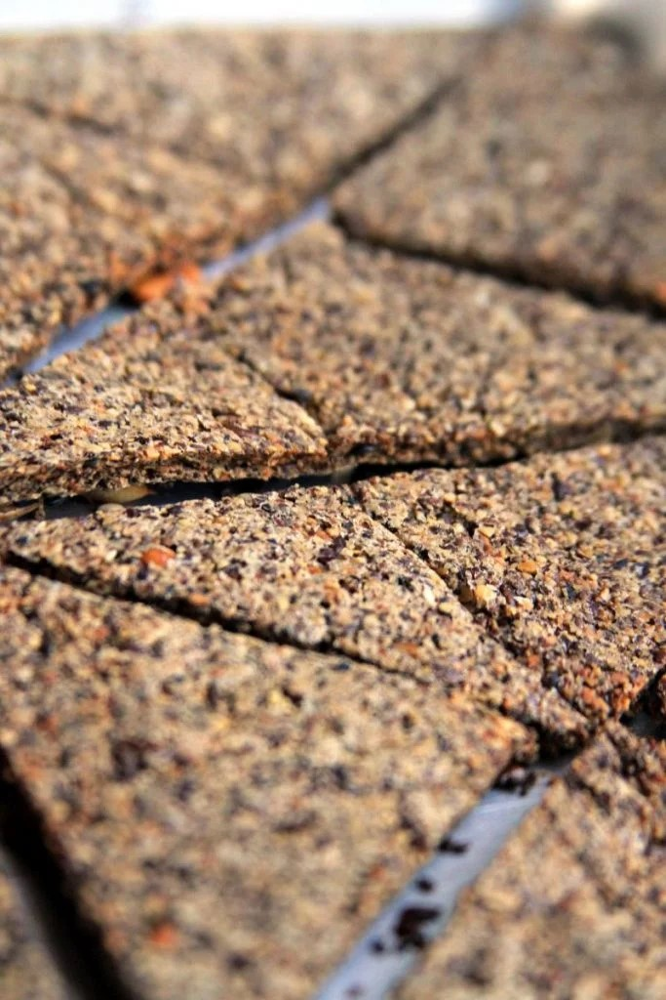

1/2 xícara de sementes de chia (80 gramas)
1/2 xícara de sementes de linhaça (80 gramas)
1 xícara mix de sementes da sua preferência (usei 1/3 xícara sementes de girassol [53 gramas], 1/3 xícara sementes de abóbora [53 gramas] e sementes de gergelim preto e branco [48 gramas])
1 xícara de água (240 ml)
1/2 colher de chá de sal (5 gramas)
Pimenta preta moída na hora (opcional)
1 colher de chá de orégano, alecrim, alho, etc
1 colher de sopa de azeite de oliva (15 ml – opcional)
Estes biscoito ficam crocantes e são extremamente nutritivos e proteicos, perfeitos para Reeducação Alimenta
Preaqueça o forno à 150º C.
Coloque todas as sementes no liquidificador e pulse algumas vezes, até você vai obter uma farofa grossa.
Despeje esta as sementes processadas em uma bacia, tempere com sal, pimenta e os temperos da sua preferência.
Adicione 1 xícara de água sobre as sementes e misture com uma colher.
Deixe descansar 10 minutos para que a linhaça e a chia formem o gel que vai unir o biscoito.

Forre uma forma grande (30×40 cm) com papel manteiga e unte bem com óleo vegetal. Não esqueça de untar se não o papel gruda muito no biscoito e você não vai conseguir tirar depois de assado.
Coloque a massa sobre o papel manteiga untado e espalhe uma camada fina e uniforme utilizando as costas de uma colher.

Leve para assar em forno preaquecido à 150º C por 30 minutos.
Depois de 30 minutos retire a forma do forno e corte os biscoitos como preferir. Você pode fazer quadradinhos, triângulos, pedaços maiores ou menores, vai depender da sua preferência.
Depois de cortar vire a parte que estava pra cima para baixo e retire o papel manteiga.
Volte para o forno por mais 30 minutos.
Depois deste tempo deixe os biscoitos esfriando dentro do forno por mais 1 hora. Esta etapa vai fazer com que seu biscoito fique bem crocante e delicioso.
Depois de completamente frios guarde em um vidro hermético para que mantenham a crocância por mais tempo.
Estes biscoitos podem ser guardados fora da geladeira por até 2 semanas, o que os torna uma opção prática e nutritiva pra quando bate aquela fominha entre as refeições.
A espessura do biscoito deve ser fininha, aproximadamente 0,5 cm, se não tiver uma forma grande você pode fazer metade da receita ou assar em duas etapas.
Você pode aromatizar seus biscoitos como mais gostar, se gostar de sabores intensos você pode adicionar na massa 2 dentes de alho esmagados e uma pitada de páprica picante. Se preferir um sabor mais suave você pode aromatizar com 2 colheres de sopa de orégano.
Sirva com Guacamole, Patê de Grão-de-bico, Patê de Atum ou coma puro que é uma delícia.
Calorias: 115
Açúcares: 0,1g
Sódio: 5%
Gorduras Totais: 9,5g
Gorduras Saturadas: 1,2g
Gorduras Insaturadas: 7,9g
Gorduras Trans: 0%
Carboidratos: 2%
Fibras: 16%
Proteínas: 8%
Colesterol: 0%